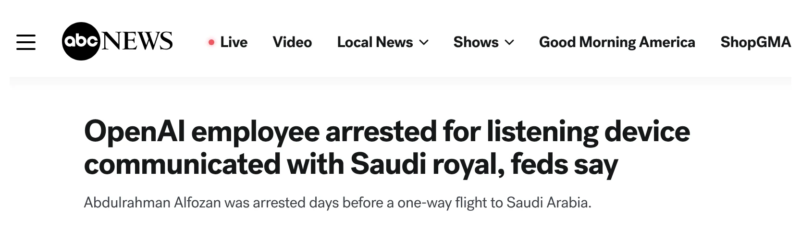
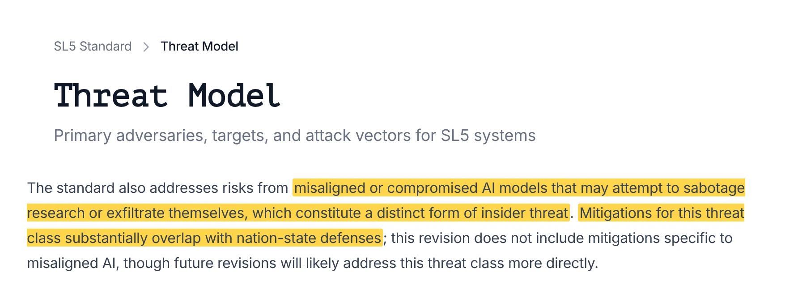

What it takes to stop a superpower from stealing frontier AI
$ scp weights.bin
Nitzan Pomerantz
Scan → pick a side
– in the room
No phone? You'll get a show of hands.
Copying model_weights.bin → SD card
0%✓ Copied
Not enough space.
Delete 'Call of Duty' to continue?
Payoff list = risks tracked in the labs' own safety frameworks
$ python Removing_Safety_Guardrails.py
0%
AI alignment without nation-state cybersecurity is just free R&D for your adversary.
Nitzan Pomerantz
It's already on your phone
–
–
$ pip install turbo-weights-v2
Collecting turbo-weights-v2
Author: dark_wizard_99 · Created: 14 mins ago
Successfully installed turbo-weights-v2

Two people physically authorize every sensitive action.
dev-2 approved these changes · 12 seconds later
LGTM 👍
RAND
Securing AI Model Weights (2024)
the attacker tiers
Security Level 5
SL5 Standard (2026)
the building blocks
Price?
Schedule?
How much does SL5 slow down research?
–
As a lab CEO, when do you lock down?
–
Already silently stolen?
–
expect a heavy slowdown (30%+)
would wait for "Just-in-Time"
The bottleneck isn't money.
It's the calendar.
"Achieving SL5 is currently not possible."
RAND, 2024
SL5 network
the internet
new network router
?
Alignment: an unsolved science problem.
Securing the weights: a systems-engineering fight.

Understand it in 5 min
nitzpo.github.io/sl5/introthe intro · works on a phonePlay with the simulator
nitzpo.github.io/sl5on a computer, not a phoneGo deeper
the RAND report · the SL5 StandardTalk to me
LinkedIn / after the talkMissed it? Scan:
Already working on this: RAND · Security Level 5 · Irregular · Heron · Palisade · FAR.AI · UK AI Security Institute · US CAISI
Thank you
Nitzan Pomerantz